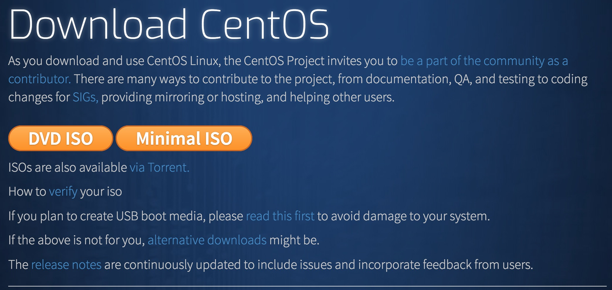
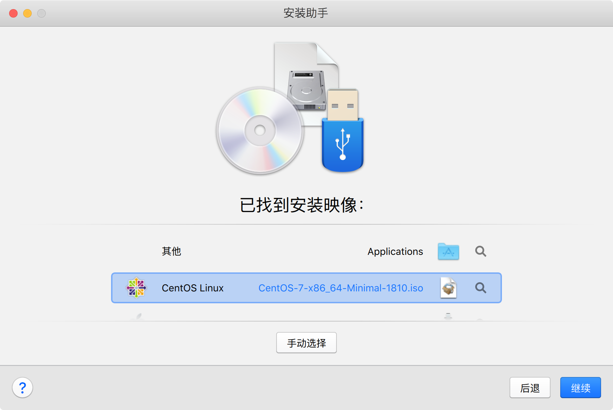
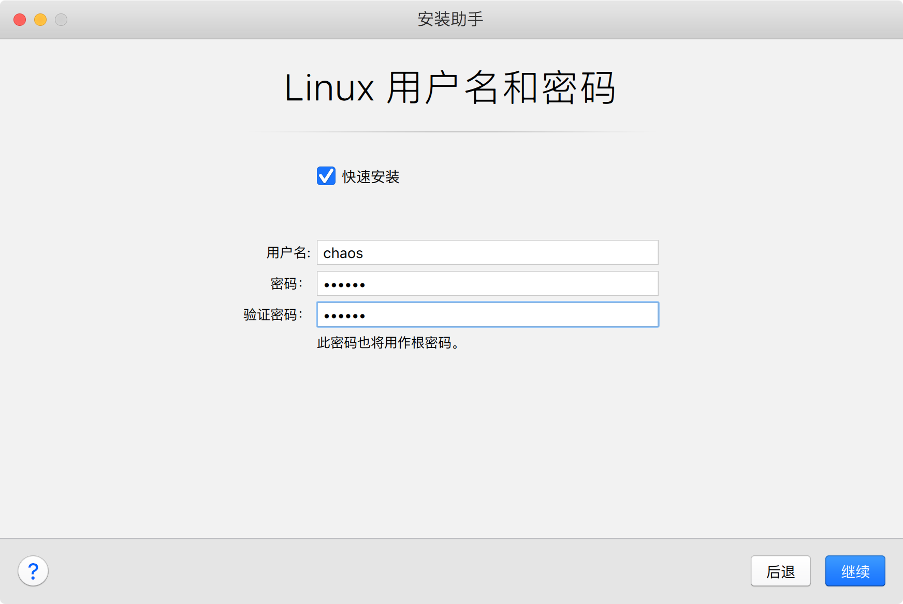
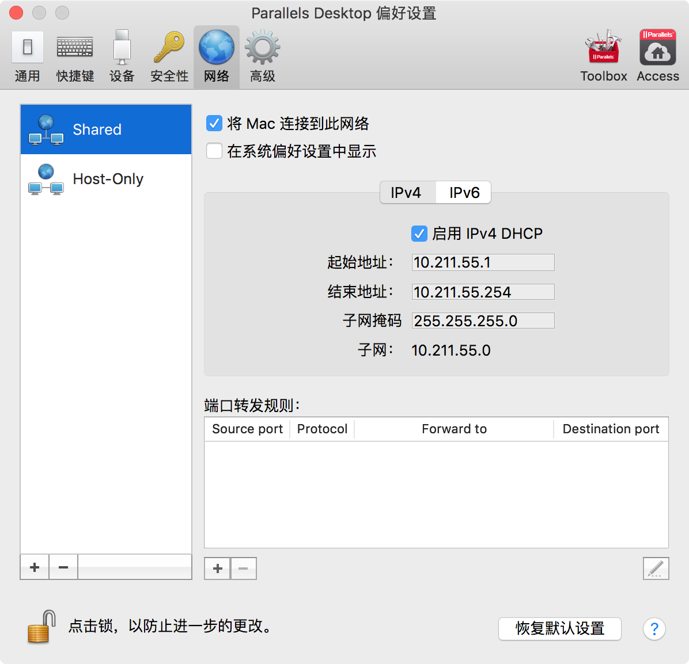
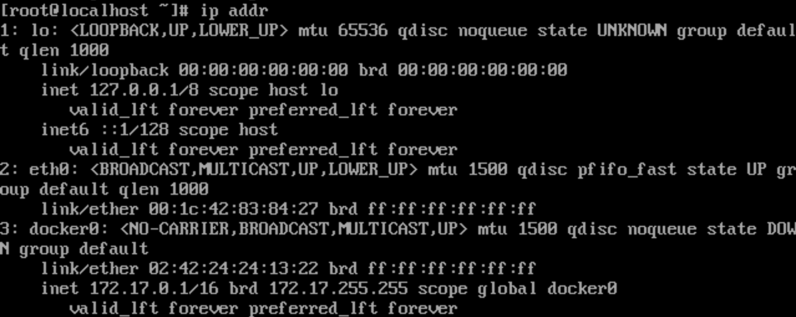
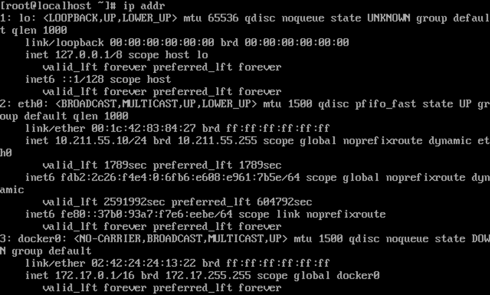
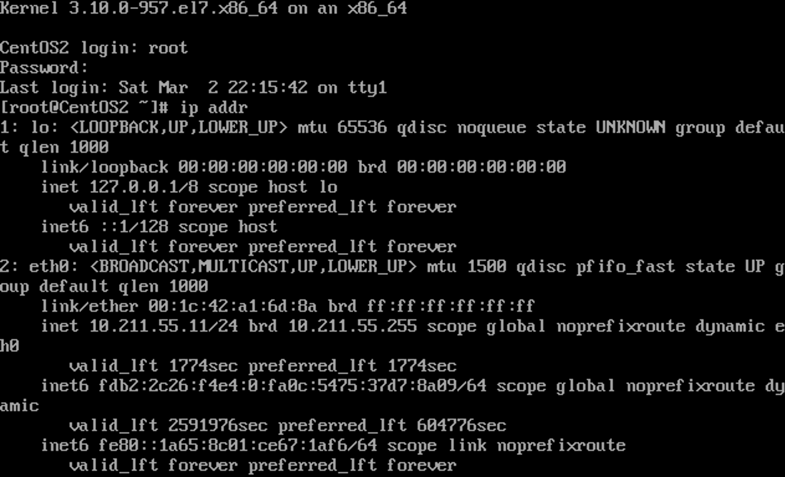
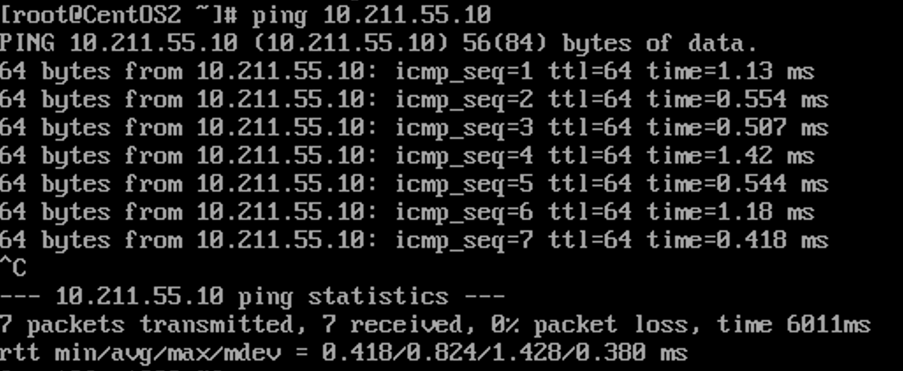

Set up the Cluster Environment
Create Linux VMs
First, in the first phase, I need to create a few Linux VMs to prepare for the last of the training.
And here I choose Centos to build up the environment. So I download the image for the official site and create in the Parallel Desktop.
Because the cluster environment doesn’t need high performance, minimal ISO is enough.

And then create the vm in Parallel Desktop with the iso file downloaded.

Set the Username and Password and install quickly.

To make it easier, 2 vms are enough for the first step. Even if we need more, we can just copy one of them conveniently.
Establish the network
Before setting the network config, we should first check the Preference of shared Network and make sure that it is available.

The network card of the initial Centos is turn off at first.
Enter the operator system, and input the command below.
1 | ip addr |
It’s shown that the network card doesn’t work now, because the vm has no ip which means that it can’t connect to the network.

And we can just text the config file of eth0 and put it on.
1 | vi /etc/sysconfig/network-scripts/ifcfg-eth0 |
After getting into the file, we can see that now the ‘ONBOOT’ feature is set OFF

Reset the ONBOOT on by replacing the no with yes.
Save and quit the file. And restart the network.
1 | sudo service network restart |
Then, check the ip again.
1 | ip addr |
Now it’s apparently shown that the IP address is 10.211.55.10/24.

After getting the ip address, Do the same thing in the other vm.
Then it’s shown that the IP address is 10.211.55.10/24

Try to ping each other and see whether they are connected. (Take a vm as an example)

Openssh-server
Finally, in order to operater the Centos in my host terminal and easily record the output of every command, I need to install openssh-server in the Centos.
Usually, OpenSSH will be downloaded with the Centos, if not, just run the command below and install.
1 | yum install openssh-server |
Start the service.
1 | service sshd start |
Now, the openssh-server has been estabilshed and it’s available to connect the Centos Vms in the host terminal.
Test by running the command in Terminal and input the password.
1 | $ ssh -l root 10.211.55.10 |
After success of login, we can operate the Centos in terminal.


评论加载中